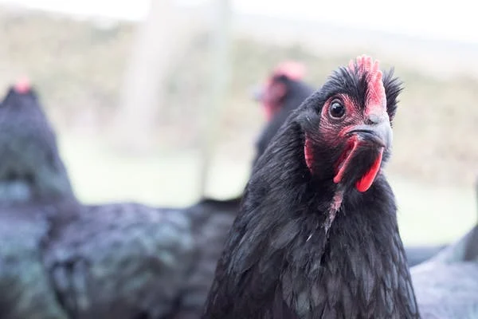

In Kenya, raising chickens has emerged as one of the finest alternatives to white-collar work, with many young people choosing to launch their own businesses rather than wait to knock on a thousand doors in search of employment. In Kenya, chicken farming is the most common type of poultry production. This article focuses on the chicken industry's financial success. Everything begins with the straightforward notion of simply retaining a single chicken that you received as a gift from your grandma. After a year, you realize it has become too large and the neighborhood needs one, so you decide to sell it for Sh 500. You decide to spend the Sh 500 and the Ksh 100 on two young chicks after giving it some thought.
You choose to seek your father for help one morning. Since he has been your supporter since you were a baby, he chooses as your dad not to let you down. When you tell him about the proposal, he nods and says he'll give you a specific response in two hours. He arrives with the Ksh 20,000 you requested after exactly two hours and cautions you against wasting the funds on which he has labored for many years. You make the decision to spend Ksh 100 to buy 100 chickens the next morning. You sell them at Ksh 400 apiece after three months. A cold Ksh 20,000 was earned. We refer to this as the power of entrepreneurship since that is how businesses begin. I was able to raise chickens.
Chicken rearing is a lucrative business in Kenya, one of the few businesses where the owner is guaranteed profits. It doesn’t matter where one sets up the business, what matters is whether the chicken will mature for the market. On average, chicken take 5 weeks to mature in Kenya-but the traditional ones take at least 3 months. It implies that if you buy your chicken today, you will wait for exactly 2 months to cash them. The secret to making good money from chicken rearing in Kenya is to keep at least 1000 at a time. This will assure you at least a profit of Ksh.50,000 per month.
One of the challenges of chicken rearing is that you must always be available to provide food at least thrice a day and also give them water at least twice a day. Another challenge is that if there is an outbreak, you might lose a significant number of your precious chicken if you don’t use appropriate drugs. All in all, no business lacks risks, in fact businesses with good returns have the most serious risks, chicken rearing being among them. In order to start chicken rearing business in Kenya, you require a capital of at least Ksh 5,000 if it’s small scale and Ksh 100,000 if it’s large scale. Don’t fear to try even if it’s obvious you’ll fail, even if you’ll fail it you will learn something that could make you even better next time.
Poultry farming makes a substantial contribution to household food security throughout the developing world. It also helps to diversify incomes and provide quality food for individuals. However small scale farmers are constarined by challenges namely:
Poultry farming is an income generating project as the main goal in poultry keeping. Eggs can provide a regular albeit small income while the sale of live birds while slaughtered birds provides a bit more flexible source of cash as required.
This density of birds per unit area, its the most important basic principle in housing as the space available determines the number and the type of poultry that can be kept.
this is the airflow in and outside the housing. Building with open sides is ideal, otherwise cross-ventilation at bird level should be allowed in for the through the floor level inlets and in a direction to allow the prevailing wind to blow across the width of the building
A light intensity and duration is essential. A dark house leads to lethargic, in active, and unproductive birds. Light is important for feeding and also important for sexual maturity.ie it accelerates the sexual maturity growing pullets bringing them to lay sooner and it also increase egg production.
Shelter sheds and buildings influence the type and choice of housing to protect poultry from the effects of weather and predators. This includes the local climate, space available, size of the flock and the management system.